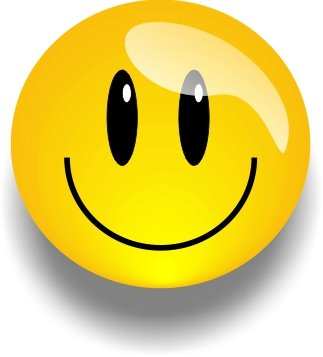
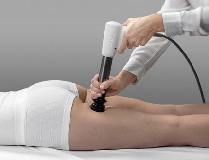
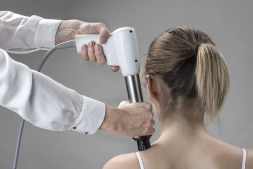
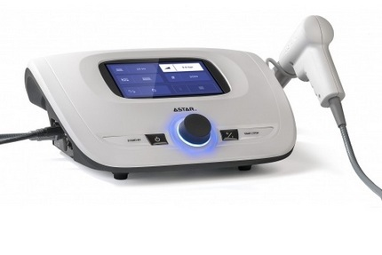
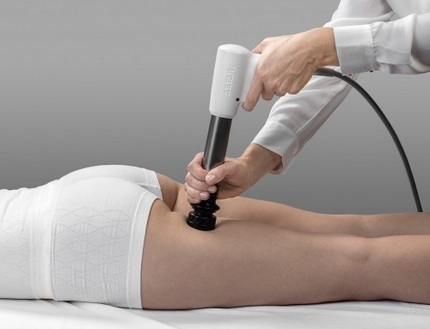
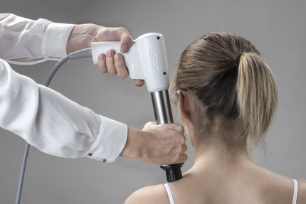
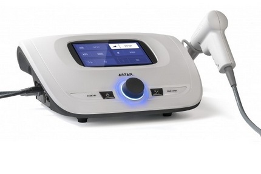

Oferta
Prądy interferencyjne – NEMEC
Zastosowanie lecznicze:
- zespoły bólowe w przebiegu choroby zwyrodnieniowej stawów kręgosłupa
- dyskopatie
- choroby zwyrodnieniowe stawów
- bóle stawów w przebiegu RZS i ZZSK
- nerwobóle i zespoły uciskowe
- zapalenia okołostawowe
- zespoły naczyniowe
- stany po urazach narządu ruchu
- zespoły przebiegające ze wzmożonym napięciem mięśniowym
- zaburzenia wegetatywne
- obrzęki, wynaczynienia podskórne i śródmięśniowe
Prąd impulsowy TENS
Zastosowanie lecznicze:
- dyskopatie
- choroby zwyrodnieniowe stawów
- bóle stawów i zespołu bólowe w przebiegu RZS i ZZSK
- nerwobóle
- zespoły uciskowe
- zapalenie okołostawowe
- półpasiec
- ból pooperacyjny
- inne zespoły bólowe oprócz bólu pochodzenia nowotworowego
- częściowe uszkodzenie włókien nerwowych aferentnych (torowanie)
- zaniki mięśni z unieruchomienia oraz z częściowego odnerwieni
- przyspieszenie zrostu kostnego
- leczenie ran
Prąd Kotz’a - rosyjska stymulacja
Wpływ biologiczny: skurcz mięśni szkieletowych.
Zastosowanie lecznicze:
- zaniki mięśniowe z unieruchomienia
- trening mięśniowy
- modelowanie sylwetki
- lipoliza
- zmniejszenie cellulitu
Prądy diadynamiczne
Wpływ biologiczny: łagodzenie bólu, poprawa krążenia obwodowego, normalizacja aktywności układu wegetatywnego, relaksacja mięśni, przyspieszenie resorpcji krwiaków i obrzęku.
Zastosowanie lecznicze:
- zespoły bólowe w przebiegu choroby zwyrodnieniowej stawów kręgosłupa
- dyskopatie
- choroby zwyrodnieniowe stawów
- nerwobóle i zespoły uciskowe
- zapalenie okołostawowe
- zespoły naczyniowe
- stany po urazach narządu ruchu
- zespoły przebiegające z wzmożonym napięciem mięśniowym
- zaburzenia wegetatywne
- odmroziny
- obrzęki, wynaczynienia podskórne i śródmięśniowe
- odma, rozedma podskórna
Tonoliza
Wpływ biologiczny: przywracanie równowagi fizjologicznej mięśni, włączenie układu hamującego odruch na rozciąganie przez pobudzanie narządu Golgiego, uczynnianie nowych połączeń synaptycznych.
Zastosowanie lecznicze:
- stymulacja mięśni porażonych spastycznie przy uszkodzeniu Ośrodkowego Układu Nerwowego
Prądy impulsowe – prostokątny
Wpływ biologiczny: stymulacja mięśni i nerwów.
Zastosowanie lecznicze:
- elektrostymulacja nerwów
- elektrostymulacja mięśni szkieletowych zdrowych lub nieznacznie odnerwionych
- elektrodiagnostyka, wykreślanie krzywej I/t
Prądy impulsowe – trójkątny
Wpływ biologiczny: stymulacja mięśni i nerwów.
Zastosowanie lecznicze:
- elektrostymulacja mięśniówki gładkiej np. elektrostymulacja w przypadku atonii pooperacyjnej pęcherza moczowego i jelit, leczenie zaparć spastycznych i atonicznych
- elektrostymulacja mięśni szkieletowych odnerwionych
- elektrodiagnostyka, wykreślanie krzywej I/t
Unipolarny prąd falujący
Wpływ biologiczny: łagodzenie bólu, wzmocnienie siły mięśniowej, usprawnienie krążenia.
Zastosowanie lecznicze:
- ostry/przewlekły ból o znanej etiologii
- podawanie leku (jonoforeza)
- zaburzenia krążenia
- obrzęki
- krwiaki
- trening siły mięśniowej
Prąd galwaniczny
Wpływ biologiczny: rozszerzenie naczyń obwodowych, ruch jonów w tkankach.
Zastosowanie lecznicze:
- podawanie leku (jonoforeza)
- zaburzenia krążenia
- diagnostyka wewnętrznych ognisk zapalnych (galwanopalpacja)
Mikroprądy
Wpływ biologiczny: przywracanie równowagi elektrycznej komórek i tkanek, usprawnienie krążenia w naczyniach włosowatych, wspomaganie procesów regeneracji komórek i tkanek, przyspieszenie rozpadu i eliminacja kwasu mlekowego i substancji bólowych.
Zastosowanie lecznicze:
- ostry/przewlekły ból o znanej etiologii
- choroba zwyrodnieniowa stawów kończyn/kręgosłupa
- utrudniony zrost kostny
- trudno gojące się rany
- urazy tkanek miękkich okołostawowych
- odleżyny
- owrzodzenia
- kosmetyka twarzy
Przeciwwskazania do elektroterapii
- pacjenci z wszczepionymi urządzeniami elektronicznymi (np. rozrusznikiem serca) – zabiegi na tułowiu i klatce piersiowej
- pacjenci z wszczepionymi implantami (np. endoprotezy, śruby kostne) powinni być konsultowani przez lekarza przed rozpoczęciem zabiegów
- infekcje i procesy zapalne w stanie ostrym
- zakrzepowe zapalenie żył
- zagrożenie zatorem
- choroby z możliwością krwawień
- ciąża (rejon brzucha i dolnego odcinka kręgosłupa)
- zaburzenia czucia
- ból o nieznanej etiologii
- aktywny nowotwór w obszarze leczenia
- aktywna gruźlica
- choroby przebiegające z gorączką
- powierzchowne implanty metalowe – zachować szczególną ostrożność
- miażdżyca zarostowa tętnic w okresie II b-IV wg. Fontaine’a
- zmiany skórne w miejscu przyłożenia elektrod
- przypadki, w których skóra nie może być zwilżana
Magnetoterapia jest skuteczną metodą leczenia pulsującym polem magnetycznym niskiej częstotliwości. Leczenie polem magnetycznym zostało odkryte już ponad 100 lat temu przez Jamesa Maxwella. Spośród wszystkich metod fizykoterapii - magnetoterapię wyróżnia głębokie, a nie tylko powierzchowne, oddziaływanie na organizm.
Wskazania:
- opóźniony zrost kostny
- staw rzekomy
- osteoporoza
- choroba zwyrodnieniowa stawów
- reumatoidalne zapalenie stawów
- owrzodzenia i zmiany troficzne podudzi
- infekcje bakteryjne skóry i tkanek miękkich
- bliznowce
- stan po udarze mózgu
- migrena i bóle naczynioruchowe głowy
- zaburzenia czynności nerwów czaszkowych i obwodowych
- stwardnienie rozsiane
- choroby infekcyjne rogówki
- zanik nerwu wzrokowego
- nadciśnienie tętnicze
- choroba niedokrwienna serca
- zaburzenia rytmu serca
- nadwrażliwe jelito grube
- przewlekłe zapalenie trzustki
Przeciwskazania:
- ciąża
- choroba nowotworowa
- czynna gruźlica
- cukrzyca młodzieńcza
- krwawienia z przewodu pokarmowego
- ciężkie infekcje
- obecność elektronicznych implantów (np. rozrusznik serca)
Ultradźwiękami określa się drgania mechaniczne o częstotliwości przekraczającej granicę słyszalności ucha ludzkiego. W fizykoterapii stosuje się głównie częstotliwości od 0,8 do 3,5 MHz. Efekt terapeutyczny powstaje dzięki pochłanianiu energii przez tkanki w trakcie zabiegu nadźwiękawiania.
Wpływ biologiczny: wzrost syntezy kolagenu i elastyyny, czyli włókien zapewniających elastyczność skóry, przyspieszenie syntezy DNA, redukcja rozstępów, rozszerzenie naczyń krwionośnych i przekrwienie narządów, wewnątrzkomórkowy wzrost syntezy wapnia, zmiany w szybkości przewodzenia włókien nerwowych.
Powyższe skutki biologiczne są podstawą leczniczego działania ultradźwięków, które wywołują w organizmie określone skutki terapeutyczne.
Wskazania do terapii ultradźwiękowej:
- stany zapalne
- zespoły bólowe:
- w przebiegu choroby zwyrodnieniowej stawów
- bóle kręgosłupa
- zespół bólowy rwy kulszowej
- zespół bolesnego barku
- zespół bolesnego łokcia
- bóle fantomowe
- obrzęki
- choroby zwyrodnieniowe stawów
- nerwobóle
- szczękościsk
- blizny
- owrzodzenie goleni
- w celu przyspieszenia zdrowienia tkanek
- do odbudowy i poprawy krążenia
- w celu zwiększenia rozciągliwości tkanki łącznej
- w przypadku przyspieszenia zrostu kostnego
- zmniejszają napięcie mięśni, ścięgien i więzadeł
- podawanie leku - fonoforeza
Ultradźwięki wykorzystuje się również w zabiegu fonoforezy, nieinwazyjnym zabiegu wprowadzania leku do organizmu. W celu wzmocnienia działania ultradźwięków, zamiast tradycyjnego środka sprzęgającego, stosuje się żel zawierający substancje czynne − przeciwzapalne, przeciwbólowe, poprawiające ukrwienie lub ułatwiające uelastycznienie blizn. Wprowadzanie ich do tkanek za pomocą ultradźwięków zapewnia szybsze i głębsze wnikanie substancji leczniczych.
Przeciwskazania:
- nowotwory
- ciąża
- czynne procesy gruźlicze
- skazy krwotoczne
- ostre procesy zapalne i stany gorączkowe
- cukrzyca (spadek poziomu glukozy we krwi)
- zakrzepowe zapalenie żył
- wszczepione elektroniczne implanty, metalowe endoprotezy, stymulatory serca
- neuropatie
Terapeutyczne naświetlanie promieniowaniem laserowym w zakresie widzialnym R czerwone (dla długości fali 660 nm) i niewidzialnym IR podczerwone (dla długości fali 808 nm).
Ze względu na szerokie spektrum działania laser można stosować do leczenia schorzeń w wielu dziedzinach, m.in.:
- ortopedii
- reumatologii
- neurologii
- dermatologii
- w medycynie sportowej
Wskazania:
- przewlekłe stany zapalne stawów
- zespół bolesnego barku
- łokieć tenisisty
- zespół cieśni kanału nadgarstka
- zapalenie kaletek stawowych, pochewek ścięgnistych, powięzi
- wylewy podskórne (siniaki), stłuczenia
- utrudniony, przedłużający się zrost kości po złamaniach
- urazy stawów
- skręcenia, zwichnięcia
- kręcz szyi
- zespół Sudecka (okres I i II)
- zesztywniające zapalenie stawów kręgosłupa (ZZSK)
- reumatoidalne zapalenie stawów (RZS)
- koksartroza (zmiany zwyrodnieniowe stawów biodrowych)
- gonartroza (zmiany zwyrodnieniowe stawów kolanowych)
- spondyloartroza (zmiany zwyrodnieniowe kręgosłupa)
- zespoły przeciążenia mięśni
- nerwobóle nerwów obwodowych
- nerwobóle po przebytym półpaścu
- neuropatia cukrzycowa
- trudno gojące się rany i owrzodzenia
- rany pooperacyjne i poamputacyjne
- martwica skóry
- uszkodzenia skóry
- owrzodzenia podudzi, owrzodzenia troficzne
- oparzenia
- odmrożenia
- odleżyny
- blizny – niezwłóknione
- zmarszczki
- cellulitis
- rozstępy
- trądzik pospolity
- opryszczka zwykła
- afty
- łuszczyca
Przeciwwskazania:
- choroby nowotworowe
- czynna gruźlica płuc
- skłonności do krwawień
- stany gorączkowe
- ciąża
- arytmia
- cukrzyca nieustabilizowana
Terapia zimnymi parami azotu - inaczej leczenie zimnem jest metodą coraz powszechniej stosowaną w wielu dziedzinach medycyny. Strumień pary azotu uzyskuje temperaturę -160°C.
Stosowanie kriostymulacji prowadzi do zmniejszenia zapotrzebowania organizmu na leczenie farmakologiczne. Zmniejszenie bólu aktywizuje chorego, poprawia jego kondycję psychiczną i zachęca do wykonywania ćwiczeń, których w stanie bólowym nie mógłby wykonać. Istotnym aspektem kriostymulacji jest doskonała tolerancja zabiegu.
U chorych leczonych tą metodą, znacznie zmniejszyła się liczba wykonywanych dostawowych blokad sterydowych. Dostawowe podawanie leku stanowi potencjalną możliwość zniszczenia chrząstki – nadmuch miejscowy jest nieinwazyjną metodą pozwalającą temu zapobiec.
W niektórych przypadkach dzięki kriostymulacji udaje się uniknąć zabiegu operacyjnego u chorych, u których ze względu na patologiczny rozrost błony maziowej, istniały wcześniej wskazania do wykonania synowektomii. Zabieg oziębiania powoduje mocne przegrzanie endogenne stawów aż do przekroczenia ciepłoty wyjściowej o około 30 - 40C i utrzymania się jej do 3-4 godzin.
Po kuracji niskimi temperaturami następuje:
- Uśmierzenie bólu
- Obniżenie aktywności procesu zapalnego
- Obniżenie napięcia mięśni.
- Zmniejszanie się obrzęków
- Poprawa stanu klinicznego i funkcjonalnego polegająca na zwiększeniu zakresu ruchomości chłodzonych stawów i wzroście siły mięśniowej
- Złagodzenie stanów pooparzeniowych
- Skrócenie czasu leczenia kontuzji
Wskazania:
- Reumatoidalne zapalenie stawów (RZS)
- Zesztywniające zapalenie stawów kręgosłupa (ZZSK)
- Schorzenia zwyrodnieniowe stawów
- Zespół kręgosłupa szyjnego
- Zapalenie okołostawowe
- Zespół bolesnego barku
- Dyskopatie
- Zespół Reitera
- Liszaj rumieniowaty
- Postrzał
- Tendopatie
- Mialgie
- Naderwania ścięgien, zapalenia okołościęgnowe, zapalenia ścięgien
- Zwichnięcia, skręcenia, złamania
- Obrzęki pooperacyjne
- Oparzenia
- Długo nie gojące się rany
Przeciwskazania:
Pacjenci z niewydolnością krążenia obwodowego z następowym upośledzeniem trofiki skóry i tkanki podskórnej oraz z miejscowymi odmrożeniami.
Hydroterapia (wodolecznictwo) jest to metoda leczenia bodźcowego masażem wirowym polegająca na zewnętrznym stosowaniu wody. Podstawę leczniczego działania stanowi odpowiednia temperatura wody oraz ciśnienie użyte odpowiednio do rodzaju terapii. Hydroterapia jest stosowana od wieków jako forma leczenia.
Wskazania:
- przewlekłe stany pourazowe
- przewlekłe zapalenie stawów
- zapalenia okołostawowe
- przykurcze bliznowate
- choroby reumatyczne
- zaburzenia krążenia obwodowego
- stany po chirurgicznym leczeniu żylaków
Przeciwwskazania:
- ostre stany zapalne stawów i tkanek miękkich
- zaawansowana miażdżyca tętnic
- żylaki
- niewydolność krążenia
Światłolecznictwo wykorzystuje promieniowanie podczerwone, widzialne oraz nadfioletowe.
Lampa SOLUX stosowana jest w zabiegach ciepłoleczniczych. Filtr niebieski UV działa przeciwbólowo, ponadto stosuje się go w celu złagodzenia podrażnień skóry. Światło czerwone IR zaś łagodzi stany zapalne i przyśpiesza gojenie ran.
Wskazania:
- zmiany zwyrodnieniowe stawów
- zespoły bólowe kręgosłupa
- przykurcze stawowe i mięśniowe
- kręcz szyi
Przeciwwskazania:
- zaburzenia czucia skóry
- padaczka i stany psychotyczne
- nieodwracalne uszkodzenia skóry i naczyń tj. zmiany troficzne, miażdżyca tętnic oraz obrzęki
- świeże urazy grożące krwawieniem oraz choroby zakrzepowe np. zakrzepowe zapalenie żył
- skłonność do krwawień
- miesiączka (gdy zabieg stosowany jest w okolicach brzucha lub dołu kręgosłupa)
- ostre choroby gorączkowe
- czynna gruźlica płuc
- choroby nerek
- choroby nowotworowe
- stany wyniszczenia
- zaburzenia wydzielania wewnętrznego w tym nadczynność gruczołu tarczowego
- choroby układu krążenia w tym niewydolność układu krążenia
- choroba wieńcowa
- zaburzenia w ukrwieniu obwodowych części kończyn
- nadciśnienie tętnicze od II stopnia WHO
- wady serca
- ostre stany po wylewach krwawych
- ostre stany zapalne
- ciąża (gry zabieg stosowany jest w okolicach brzucha lub dołu kręgosłupa)
Terapia światłem BIOPTRON
Wybitne właściwości charakterystyczne światła BIOPTRON umożliwiają mu penetrację nie tylko skóry lecz również tkanek pod nią. W ten sposób pozytywny efekt światła BIOPTRON nie jest ograniczony do leczonego miejsca skóry lecz ma także korzystny wpływ na cały organizm.
- Poprawia mikrocyrkulację
- Harmonizuje procesy przemiany materii
- Wzmacnia system obrony organizmu
- Stymuluje procesy regeneracyjne i naprawcze całego organizmu
- Sprzyja gojeniu się ran
- Łagodzi ból, obniża jego natężenie
- Szeroki zakres i łatwość stosowania
- Bezbolesna i krótkotrwała kuracja
- Brak stwierdzonych skutków ubocznych
- Urządzenia produkowane w Szwajcarii
Działanie lampy BIOPTRON:
- zaburzenia czucia skóry
- biostymulacyjne
- przeciwbólowe
- przeciwobrzękowe
- przeciwzapalne
- wirusobójcze
- bakteriobójcze
- przeciwnowotworowe
Brak przeciwwskazań do stosowania lampy BIOPTRON.
Terapia wziewna może być stosowana w poszczególnych stanach chorobowych górnych i dolnych dróg oddechowych zarówno profilaktycznie, jak i leczniczo z wykorzystaniem leku. Inhalacje nosa, zatok, gardła, krtani.
Leki zalecane do stosowania w nebulizacji za pomocą inhalatorów pneumatycznych to: antybiotyki, glikokortykosteroidy, leki rozszerzające oskrzela, mukolityki, kromony, dornaza alfa.
Wskazania do inhalacji to:
- przewlekłe choroby górnych dróg oddechowych tj. nieżyt nosa, gardła i krtani (alergiczne i niealergiczne),
- nawracające i przewlekle zapalenia zatok przynosowych,
- nawracające zapalenia oskrzeli,
- rozstrzenia oskrzeli,
- przewlekła obturacyjna choroba płuc (POCHP),
- astma oskrzelowa (zwłaszcza postać ciężka lub jej zaostrzenie),
- grzybice układu oddechowego,
- pneumocystoza,
- mukowiscydoza – leczenie przewlekłe i w zaostrzeniach,
- ostre infekcje dolnych dróg oddechowych.
Przeciwwskazaniami do inhalacji są:
- ciężka niewydolność krążenia,
- niewydolność oddechowa nie związana z mechanizmem obturacji oskrzeli,
- przewlekłe, ciężkie choroby układu oddechowego (gruźlica, nowotwory),
- krwotok z dróg oddechowych.
Na zabieg inhalacji proszę przynieść ze sobą maseczkę i jeśli zabieg ma być z lekiem proszę przynieść również lek.
Ćwiczenia rehabilitacyjne, usprawniające, poprawiające postawę ciała i utrzymanie organizmu w odpowiedniej równowadze mięśniowo-stawowej. Stosowane niemal w każdej jednostce chorobowej.
- ćwiczenia bierne
- ćwiczenia czynno-bierne
- ćwiczenia samowspomagane
- ćwiczenia w odciążeniu
- ćwiczenia czynne
- ćwiczenia z oporem
- ćwiczenia prowadzone
- redresje (usuwanie przykurczów stawowych)
- wyciągi
- ćwiczenia synergistyczne
- ćwiczenia oddechowe
- ćwiczenia relaksacyjne
- pionizacja i nauka chodzenia
- ćwiczenia izometryczne
- ćwiczenia korekcyjne niwelujące wadę postawy, utrwalające nawyk prawidłowego ustawienia ciała.
Specjalistyczne techniki kinezyterapii
PNF (Propriocetive Neuromuscular Facilitation) – proprioceptywne torowanie mięśniowo-nerwowe - metoda polega na nauce lub odtworzeniu prawidłowej funkcji ruchowej zaburzonej w przebiegu chorób neurologicznych lub ortopedycznych. Podstawą metody są złożone wzorce ruchowe dla kończyny górnej, kończyny dolnej, tułowia, szyi i głowy. Terapia PNF jest niezwykle przydatna w leczeniu osób po udarach, z niedowładem, w ponownej nauce operowania dłonią, powrocie mowy, oraz ponownej nauce chodu.
PNF to metoda kompleksowa: każdy zabieg kierowany jest do człowieka jako całości, a nie skupia się tylko na jednostkowym problemie czy pojedynczym fragmencie ciała. Głównym celem każdej sesji terapeutycznej jest pomoc pacjentowi w osiągnięciu najwyższego poziomu funkcjonalnego.
Masaż należy do najstarszej dziedziny wiedzy medycznej i był stosowany już w Starożytności. Wywodzi się on z Indii i Chin, gdzie stanowił naturalną metodę leczenia.
Masaż jest formą terapii, która wykorzystuje wpływ energii mechanicznej i kinetycznej na tkanki w celu wywołania odczynu. Dla uzyskania odczynu w organizmie poprzez masaż klasyczny – ręczny wykorzystuje się różne techniki masażu, które uwzględniają specyfikę budowy oraz funkcję masowanych tkanek. Techniki te to m.in.: głaskanie, rozcieranie, ugniatanie, wałkowanie, wyciskanie, oklepywanie, wstrząsanie i wibracja.
Mechanizm działania masażu jest bardzo skomplikowany i można go podzielić na działanie lokalne (miejscowe), oraz na działanie centralne (ogólne).
Działanie lokalne masażu polega na mechanicznym przepływie krwi w naczyniach krwionośnych oraz chłonki w naczyniach chłonnych. Podczas masażu wytwarzane jest ciepło, które wpływa na rozszerzenie naczyń krwionośnych, a co za tym idzie – zwiększa przepływ krwi przez mięśnie, przyspieszając dostarczanie substancji odżywczych i równocześnie wydalając produkty przemiany materii.
Działanie centralne masażu polega na pobudzeniu układu nerwowego, który za pomocą odruchów i czynności koordynacyjnych kory mózgowej jest w stanie wpłynąć na wszystkie narządy i układy naszego organizmu. W czasie masażu do mózgu docierają miliony bodźców, które wywołują w odcinku kory mózgowej stan pobudzenia, który powoduje szybsze i bardziej sprawne wykonywanie czynności przez narządy wykonawcze organizmu.
Celem masażu klasycznego jest działanie na układ ruchu (mięśnie, ścięgna, torebki stawowe, okostną, kości) oraz na skórę, tkankę łączną, tkankę tłuszczową, zakończenia nerwowe w skórze, a także na układy krwionośny i chłonny. Pośrednio masaż klasyczny działa również na narządy wewnętrzne.
Wskazania do masażu:
Dla zdrowia
- zlecenie lekarskie;
- wady postawy (kręgosłupa, kolan, stóp);
- bóle kręgosłupa różnego pochodzenia;
- choroby narządu ruchu takie jak: zespół bolesnego barku, łokieć tenisisty, zespół kanału cieśni nadgarstka, rwa kulszowa, dyskopatie itd.;
- zwichnięcia, skręcenia, złamania, stłuczenia;
- zapalenie podostre ścięgien, kaletek, pochewek, torebek;
- stany po wysiłku fizycznym;
- przykurcze, niedowłady, porażenia;
- psychonerwice;
- zaburzenia trofiki ( i po unieruchomieniu);
- blizny;
- trudno gojące rany;
- astma oskrzelowa w okresie międzynapadowym;
- stany przed i po operacji w obrębie kaletki piersiowej;
- Mózgowe Porażenie Dziecięce;
- zapalenia i podrażnienia nerwów obwodowych i splotów nerwowych;
- niedowłady jelit (zaburzenia perystaltyki jelit);
- przewlekłe zaparcia;
- wzmocnienie mięśni brzucha po porodzie;
- choroby reumatyczne i zwyrodnieniowe;
- bóle przeciążeniowe będące wynikiem siedzącego trybu życia;
- przewlekła niewydolność krążenia, która jest częstą przyczyną obrzęków;
- odleżyny;
Dla urody
- nadwaga, otyłość;
- poprawa kształtu i rzeźby sylwetki;
- likwidacja cellulitu;
- poprawa jędrności skóry i tkanek podskórnych;
- poprawa trofiki skóry i jej ogólnego wyglądu;
- zapobiega powstawaniu zmarszczek;
Dla relaksu
- długotrwały wysiłek fizyczny lub psychiczny;
- stres
- ogólne przemęczenie organizmu;
- depresja;
- stany lękowe;
- nadpobudliwość;
- bóle przeciążeniowe będące wynikiem siedzącego trybu życia;
Przeciwwskazania:
- wszelkie ostre stany zapalne;
- nieuregulowane nadciśnienie (leczone, wyrównane nadciśnienie nie jest przeciwwskazaniem);
- gorączka (powyżej 38 stopni);
- choroby zakaźne;
- nowotwory;
- zapalenia żył i tętnic;
- miażdżyca;
- schorzenia dermatologiczne skóry (owrzodzenia i stany zapalne skóry, trądzik, pęcherze, wypryski, ropień);
- krwawienia, krwotoki lub możliwość ich wystąpienia;
- wady serca;
- menstruacja;
- zaawansowana osteoporoza
Cel:
- zmniejszenie obrzęków;
- zmniejszenie napięć i dolegliwości bólowych pleców i kończyn dolnych;
- poprawa krążenia krwi i limfy, obniżenie ciśnienia krwi;
- uelastycznienie skóry i tkanki podskórnej;
- zmniejszenie częstotliwości występowania skurczów mięśni;
- poprawa sylwetki ciała;
- przygotowanie mięśni używanych podczas porodu;
- zmniejszenie bólów i zawrotów głowy;
- skuteczniejsze usuwanie szkodliwych produktów przemiany materii;
- ułatwia zasypianie;
- zmniejszenie stresu;
Zachęcamy do wykonywaniu masażu przez męża/partnera pomaga lepiej zrozumieć potrzeby kobiety, zbliżyć się do niej i do nienarodzonego dziecka.
Czas trwania:
- 15 - 60 minut, w zależności od części ciała
- raz w tygodniu w drugim trymestrze, dwa razy i więcej w trzecim trymestrze
Przeciwwskazania do wykonania masażu u kobiet w ciąży:
- Pierwszy i drugi miesiąc ciąży
- Dziewiąty miesiąc ciąży
- Choroby układu sercowo - naczyniowego
- Cukrzyca ciężarnych
- Zapalenie trzustki
- Kłębuszkowe zapalenie nerek
- Odmiedniczkowe zapalenie nerek
- Ostra niewydolność nerek
- Kamica nerkowa
- Nefropatia cukrzycowa
- Wady wrodzone nerek rozwojowe
- Gestorzy (zatrucie ciążowe)
- Stan przedrzucawkowy
- Rzucawka
- Niedokrwistości
- Skaza krwotoczna naczyniowa
- Skaza krwotoczna osoczowa
- Skaza krwotoczna pochodzenia płytkowego
- Białaczka
- Nadczynność i niedoczynność gruczołu tarczowego
- Nadczynność i niedoczynność gruczołów przytarczycznych
- Nieprawidłowy przebieg ciąży - dysfunkcja narządów moczowo - płciowych
- Nieprawidłowy przebieg ciąży - zaburzenia rozwoju płodu
- Choroby zakaźne
- Gorączka
- Wymioty
- Bóle niewiadomego pochodzenia
- Wysokie ciśnienie krwi
- Poranne mdłości
- Ból brzucha
- Biegunka
Obszary, które nie powinny być masowane:
- Skóra objęta wysypka
- Otwarte rany, siniaki
- Żylaki
- Lokalne stany zapalne
Masaż ten u kobiet w okresie karmienia piersią zwiększa laktację oraz likwiduje obrzęki. Kolejną zaletą masażu jest poprawa wyglądu i ujędrnienie biustu. Dodatkowo działa rozluźniająco i relaksacyjnie. Gdy kobieta nauczy się tego masażu sama może go stosować w domowym zaciszu.
W ofercie do wyboru:
- WYKONANIE MASAŻU NIEMOWLĄT (SHANTALA) PRZEZ TERAPEUTĘ
- NAUKA RODZICÓW MASAŻU SHANTALNA
Masaż Shantala polega na:
- spokojnym, kilkukrotnym powtarzaniu określonych ruchów w odpowiedniej kolejności na klatce piersiowej, brzuszku, raczkach i nóżkach dziecka;
- oraz na wykonaniu kilku prostych ćwiczeń z dzieckiem.
Korzyści płynące z masażu niemowląt:
- poprawia trawienie;
- rozluźnia mięsnie;
- pobudza układ limfatyczny - podnosi odporność organizmu;
- stymuluje układ hormonalny;
- pozytywnie wpływa na stan skóry;
- dotlenia, polepsza krążenie;
- podnosi świadomość własnego ciała;
- wzmaga poczucie bezpieczeństwa;
- pomaga w uregulowaniu snu;
- wycisza, uspokaja;
- zmniejsza negatywne odczucia;
Korzyści dla rodzica lub opiekuna wykonującego masaż:
- poprawia pewność siebie, wiarę w siebie, wiarę w swoje umiejętności opieki nad dzieckiem;
- uspokaja;
- łagodzi lub zapobiega poporodowej depresji u matek;
- wzmaga oraz poprawia więź z dzieckiem;
- umożliwia lepsze zrozumienie dziecka;
- pomaga w poznawaniu ciała i potrzeb dziecka.
Wskazania:
- opóźnienie psychoruchowe;
- mózgowe porażenie dziecięce;
- wzmożone napięcie mięśniowe;
- osłabione napięcie mięśniowe;
- profilaktycznie stosowany u zdrowych dzieci.
Przeciwwskazania:
- gorączka;
- głębokie, otwarte rany;
- astma;
- nieukończony pierwszy miesiąc życia.
Masaż najlepiej przeprowadzać co najmniej 30 minut po posiłku dziecka.
Metoda diagnozy i terapii wg dr Ackermanna jest obecnie jedną z najskuteczniejszych technik leczenia manualnego. Zmiany w kręgosłupie i tzw. przesunięcia kręgów powodują ucisk na nerwy i rdzeń kręgowy, co zaburza stan zdrowia, wyzwala silny ból i przyczynia się do powstawania wielu chorób. Istota terapii manualnej polega na bezbolesnym korygowaniu ułożenia kręgów i stawów międzykręgowych, co poprawia funkcjonowanie kręgosłupa i zmniejsza ucisk na nerwy i rdzeń kręgowy powodując ustąpienie lub zmniejszenie bólu.
Niepokojące objawy oprócz bólu kręgosłupa, które powinny Cię skłonić do wizyty u terapeuty manualnego: początkowo pojawiają się tylko zaburzenia czynnościowe. Jednak po pewnym czasie mogą one doprowadzić do poważnych schorzeń narządów. Skarżysz się na bóle głowy, ramion i barku, klatki piersiowej, bóle między żebrami itd., może masz też takie dolegliwości jak zgaga, bóle żołądka, kłopoty w woreczkiem żółciowym, wzdęcia, czy reflux? Różnorodność objawów jest duża i pacjenci są często bardzo zdziwieni, kiedy dowiadują się, że mogą być one spowodowane zakłóceniami pracy kręgosłupa.
Skutkiem skrzywień kręgosłupa są przesunięcia w płaszczyźnie czołowej albo strzałkowej, przez co w szczególny i nierównomierny nacisk narażone są pojedyncze kręgi, głownie dyski znajdujące się w chorobowo zmienionych odcinkach. Po „wklęsłej” stronie danego segmentu kręgosłupa powstaje zwiększony nacisk, prowadzący do szybkiego zwyrodnienia tronów kręgów oraz dysku.
Aby temu zapobiec konieczna będzie wizyta u terapeuty manualnego, podczas której najpierw dysfunkcja będzie diagnozowana, po czym bezboleśnie korygowana.
Oferujemy Państwu specjalistyczną rehabilitację ruchową z dojazdem do pacjenta. Cały program rehabilitacji zostanie dostosowany do indywidualnych potrzeb i możliwości Chorego.
Jeśli jesteś w niemocy i choroba utrudnia Ci wyjście z domu to dobrze trafiłeś. Wystarczy do nas zadzwonić i umówić się na wizytę. Terapeuta przyjedzie do Ciebie do domu i dobierze odpowiednie leczenie usprawniające lub/i masaż do konkretnej jednostki chorobowej bądź dysfunkcji.
Gabinet dietetyczny prowadzi kompleksowe poradnictwo żywieniowe, układanie odpowiednich diet, a także indywidualny tok żywieniowy dla osób zdrowych chcących zadbać o swoją sylwetkę, jak i również dla osób z wszelkimi problemami zdrowotnymi, wymagającymi stosowania indywidualnie dobranych diet .Program dietetyczny opiera się wyłącznie o racjonalne zasady odżywiania.
Oferta przeznaczone jest dla:
Osób zdrowych,
- Dzieci w okresie niemowlęcym
- Dzieci w wieku 1-3 lat
- Dzieci w wieku przedszkolnym i szkolnym
- Młodzieży
- Kobiet w ciąży oraz matek karmiących
- Sportowców
- Osób chcącym zmienić dotychczasowy sposób żywienia
- Osób, u których zmiana sposobu żywienia może odegrać ważną rolę w poprawie zdrowia
Osób w stanach chorobowych m.in.:
- nadwaga,
- otyłość,
- cukrzyca typu 2,
- choroby przewodu pokarmowego (m.in. zespołu jelita nadwrażliwego, choroba wrzodowa, choroba Crohna-Leśniowskiego, refluxs żołądkowo-przełykowy),
- choroby układu krążenia(m.in. hipercholesterolemia, miażdżyca, nadciśnienie),
- choroby nerek,
- alergie pokarmowe,
- niedożywienie-anemia,
- chorób tarczycy,
- zaburzenia odżywiania: anoreksja, bulimia i ortoreksja
- inne.
Wizyta:
Pierwsza wizyta u dietetyka trwa zwykle około 60 minut. Kolejne wizyty, są nieco krótsze, należy zarezerwować na nie około 30 minut. Na pierwszą wizytę należy zabrać:
- 3-dniowy jadłospis [FORMULARZ
DO POBRANIA / wersja *.PDF] (spisz wypite napoje oraz posiłki i przekąski zjedzone w ciągu ostatnich 3 dni -najlepiej 2 dni powszednie i 1 dzień
wolny)
- aktualne badania laboratoryjne
- jeżeli przyjmujesz leki lub suplementy, zabierz je ze sobą lub spisz ich nazwy
Przed wizytą:
Aby uzyskać prawidłowe wyniki pomiarów podczas wizyty nie należy:
- wykonywać intensywnych ćwiczeń fizycznych przez 12 godz.,
- spożywać jakichkolwiek napojów czy pokarmów przez 2 godz.,
- spożywać alkoholu przez 48 godz.
Uwaga:
Pomiar zawartości tkanki tłuszczowej, mięśni i wody nie może być przeprowadzane u osób z wszczepionym rozrusznikiem serca, kobiet w ciąży i osób z padaczką. U tych osób wykonywany jest tylko pomiar masy ciała.Pomiar odbywa się w ubraniu, ale na bosych stopach.
Pierwsza wizyta obejmuje:
- szczegółowy wywiad zdrowotny i dietetyczny (analiza stanu zdrowia, trybu życia, wysiłek fizyczny, nawyki żywieniowe, poznanie dotychczasowego żywienia pacjenta, wskazanie błędów żywieniowych, udzielanie odpowiedzi na pytania nurtujące pacjenta),
- analizę wyników badań laboratoryjnych przyniesionych przez pacjenta
- pomiary antropometryczne(wzrost, obwodu talii, brzucha i bioder)
- analizę składu masy ciała (masa tkanki tłuszczowej w %, masa tkanki mięśniowej w kg, całkowita zawartość wody w organizmie w % ,masa kości w kg, wiek metaboliczny, wskaźnik trzewnej tkanki tłuszczowej, wskaźnik BMI i WHR, BMR wskaźnik podstawowej przemiany materii kcal)
- pomiar ciśnienia tętniczego krwi,
- wyliczenie podstawowej przemiany materii
- omówienie prawidłowego sposobu żywienia wraz ze wskazówkami dla przyszłej diety.
Pacjent otrzymuje:
- wyniki analizy dotychczasowego sposobu odżywiania
- wyniki analizy składu ciała
- indywidualne zalecenia żywieniowe, w tym m.in.: zalecane wielkości porcji do spożycia
Na życzenie pacjenta po wizycie zostanie opracowany indywidualny 7,14 lub 21 - dniowy jadłospis dostosowany do współistniejących chorób, preferencji żywieniowych i trybu życia pacjenta.
Ceny usług:
- Pierwsza wizyta konsultacji (w tym analiza spożycia i analiza składu ciała) - 70zł
- Opracowanie jadłospisu 7 - dniowego - 80 zł
- Opracowanie jadłospisu 14 - dniowego - 140zł
- Opracowanie jadłospisu 21 - dniowego - 190zł
- Wizyta kontrolna + analiza składu ciała - 50 zł
- 2x wizyta kontrolna - 80 zł
- 3x wizyta kontrolna - 120 zł
- Zakupy z dietetykiem - 80 zł
Dr Kenzo Kase stworzył i rozwinął w Japonii w latach 70 XX w. metodę Kinesiotapingu nie ograniczającą ruchów, opartą na użyciu plastrów Kinesio Tex®. Kinesiotaping oddziałuje na mięśnie, powięzie, stawy, układ limfatyczny i nerwowy.
Kinesiology Taping jest to metoda wspomagająca proces rehabilitacji. Ma zastosowanie w fizjoprofilaktyce, w ortopedii i traumatologii, neurologii, reumatologii, pediatrii, ginekologii i położnictwie, medycynie sportowej i wielu innych.
Kinesiology Taping to przede wszystkim oddziaływanie sensoryczne, ale również proprioceptywne. Dzieje się tak poprzez odciążenie systemu powięziowego. Efektem aplikacji jest pofałdowanie powierzchni skóry, co powoduje zwiększenie przestrzeni pomiędzy skórą a powięzią. Umożliwia to usprawnienie mikrokrążenia krwi i limfy oraz aktywuje procesy samoleczenia.
Zalety Kinesiology Tapingu:
- Umożliwiają zachowanie pełnego zakresu ruchu,
- Pozwalają na normalizację napięcia mięśniowego i aktywowanie mięśni uszkodzonych,
- Zmniejszają ból i nienaturalne odczucia skóry,
- Likwidują zastoje i obrzęki limfatyczne,
- Korygują niewłaściwe pozycje powierzchni stawowych,
- Wpływają na korekcję ułożenia powięzi i skóry,
- Poprawiają mikrokrążenie.
Przed zastosowaniem konkretnej techniki kinesiotapingu pacjent jest dokładnie badany celem oceny układu mięśniowo-powięziowego. Plaster jest dobrze tolerowany i rzadko wywołuje reakcje alergiczne.
Istnieje sześć głównych technik Kinesiology Tapingu:
- Mięśniowa,
- Limfatyczna,
- Więzadłowa,
- Powięziowa oscylacyjna,
- Korekcji powięziowej,
- Funkcjonalna.
Metody te różnią się od siebie sposobem przyklejenia (pozycja wyjściowa, sposób rozciągnięcia taśmy, rozciągnięcie obszaru skóry i powięzi powierzchniowej, na który plaster jest aplikowany). W zależności od zastosowania konkretnych indywidualnie dobranych technik, możemy osiągnąć pożądany efekt.
Kinesiology Taping stosowany jest w przypadkach:
- Wspomagania funkcji stawu,
- W przypadku bólu kręgosłupa,
- W wadach postawy,
- Uszkodzeniu obwodowego układu nerwowego, np. porażenie nerwu twarzowego. Uzyskujemy poprawę funkcji oraz wyglądu,
- Obrzęki i krwiaki pourazowe. U niemal wszystkich pacjentów aplikacje redukują ból i obrzęk,
- W celu drenażu limfatycznego,
- Wspomaganie przeciwbólowe i przeciwobrzękowe w leczeniu po zabiegach chirurgicznych jamy brzusznej,
- Blizny pooperacyjne (po minimum 4-6 tygodniach od zabiegu),
- Wspomaganie przeciwobrzękowe u kobiet po mastektomii,
- W dolegliwościach bólowych kręgosłupa lędźwiowo-krzyżowego u kobiet w czasie ciąży,
- W przypadku napięć mięśniowo-powięziowych,
- W entezopatiach (np. łokieć tenisisty, łokieć golfisty, ostroga piętowa).
Istnieje wiele form skutecznej terapii w rehabilitacji. Prawidłowo zastosowana metoda Kinesiology Taping działa przez 24 godziny na dobę, a więc nie tylko podczas sesji terapeutycznej. Dzięki temu wspomaga długotrwały proces rehabilitacji. Efekt poprawy zauważalny jest bezpośrednio po aplikacji i utrzymuje się po jej usunięciu.
Kinesiology Taping jako metoda wspomagająca terapię tkanek miękkich i normalizująca napięcia systemu mięśniowo-powięziowego, jest znakomitym narzędziem w rękach fizjoterapeutów poprawiającym jakość życia i zdrowie pacjentów.
Fizykoterapia nie przyniosła rezultatu? Nadal odczuwasz ból? Spróbuj zabiegu falą uderzeniową i wygraj z bólem. Metoda ta jest stosowana przy wielu jednostkach chorobowych, w których wyczerpały się klasyczne metody leczenia fizykoterapeutycznego.
Zalety:
- metoda nieinwazyjna,
- wystarczy kilka zabiegów,
- niskie koszty leczenia,
- szybki i skuteczny efekt.
Terapia falą uderzeniową stosowana jest w wielu dziedzinach medycyny: chirurgii, ortopedii, medycynie sportowej, reumatologii, dermatologii czy medycynie estetycznej.
Oddziaływanie biologiczne fali uderzeniowej
Terapia falą uderzeniową wykazuje działanie przeciwbólowe, ma wpływ na metabolizm komórkowy, poprawia przepływ krwi w miejscu objętym leczeniem oraz stymuluje regenerację tkanek miękkich. Efekt przeciwbólowy uzyskuje się poprzez zwiększenie przepływu krwi, dzięki czemu dochodzi do zmniejszenia odczynu zapalnego.Terapia jest wykorzystywana w leczeniu trudno gojących się złamań i stawów rzekomych. Falę stosuje się także u pacjentów z entezopatiami (np.: ostroga piętowa), służy również do kruszenia zwapnień w tkankach miękkich. Natomiast najnowsze wykorzystanie terapii uderzeniowej to walka z miejscową otyłością i cellulitem.
Na czym polega zabieg falą uderzeniową?
Aplikacja fali uderzeniowej przebiega w podobny sposób do zabiegu przy pomocy ultradźwięków. Na okolicę zabiegową nakładany jest żel, następnie okrężnymi ruchami przemieszcza się aplikatur po powierzchni skóry. Następnym etapem jest dokładne określenie miejsca podjętego zabiegowi. Określa się go najczęściej przy pomocy diagnostyki obrazowej (RTG, TK, MRI, USG), która pozwala na precyzyjne skierowanie fali uderzeniowej na obszar objęty procesem patologicznym. Innym sposobem jest diagnostyka palpacyjna, choć należy pamiętać, że nie zawsze miejsce bolesne jest odzwierciedleniem źródła bólu. Aparatem można działać na dużych powierzeniach lub na punkty bolesne. Dokładna dawka i czas zabiegu dobierany jest indywidualnie do schorzenia pacjenta.
Wskazania do zabiegu falą uderzeniową:
- ostroga piętowa,
- zapalenie powięzi podeszwowej stopy,
- ból ścięgna Achillesa,
- ból ścięgien rzepki (kolano skoczka),
- ból przyczepów ścięgna udowego,
- zespół tarcia proksymalnego pasma biodrowo-piszczelowego,
- zapalenie przyczepu ścięgna do krętarza,
- bóle stawów barkowych ze zwapnieniami lub bez,
- wapniejące zapalenie ścięgien stawu barkowego,
- entezopatia nadkłykcia bocznego i przyśrodkowego (łokieć tenisisty i łokieć golfisty),
- wyrośla kostne w drobnych stawach dłoni w przypadku choroby zwyrodnieniowej stawów pierwszego stopnia,
- bolesne punkty spustowe,
- trudno gojące się rany.
Przeciwwskazania do stosowania fali uderzeniowej:
- zaburzenia krzepnięcia krwi (hemofilia),
- stosowanie leków przeciwzakrzepowych,
- zakrzepica,
- choroba nowotworowa,
- ciąża,
- polineuropatia w cukrzycy,
- ostre stany zapalne,
- dzieci w okresie wzrostu,
- terapia kortyzonowa do 6 tygodni przed pierwszą terapią.
- odkładanie złogów wapniowych w ścięgnach mięśni odpowiedzialnych za ruch w stawie barkowym,
- zapalenie kaletki podbarkowej (struktura odpowiadająca za zmniejszenie tarcia),
- zapalenie pochewki maziowej,
- przerwanie ścięgna,
- bark zamrożony.
Terapia falą uderzeniową jest dla większości pacjentów bezbolesna i nie wymaga znieczulenia oraz stosowania środków farmakologicznych. Często jednak przed zabiegiem wykonywane jest schładzanie parami ciekłego azotu – krioterapia.
Punkty spustowe
Za mięśniowo-powięziowe punkty spustowe bólu przyjmuje się nadpobudliwe ogniska w mięśniach i powięzi związane z napiętymi pęczkami mięśniowymi. Punkty spustowe wykrywa się palpacyjnie, a ich uciśnięcie
powoduje miejscowy skurcz i ból rzutowany dystalnie względem miejsca uciśnięcia. Działanie przeciwbólowe na punkty spustowe jest niezwykle ważnie ze względu na to, że bolesne punkty upośledzają prawidłowe funkcjonowanie
układu ruchu. Dzięki szybkiej i skutecznej terapii, można uniknąć ograniczeń w elastyczności tkanek i przeciążeń mechanicznych.
Entezopatie
Przyczyną bólu przy entezopatii są zbyt naprężone mięśnie w miejscu ich przyczepu do kości. Pojedyncze włókna ścięgna odrywają się od objętego procesem patologicznym miejsca (np. pozbawionej okostnej kości).
Taka sytuacja kliniczna prowadzi do wytworzenia wyrośli kostnych tzw. entezofitów, które osłabiają układ kostno-mięśniowy i może być przyczyną patologicznych zerwań połączenia ścięgnisto-kostnego. Do tego rodzaju schorzeń
zaliczamy: tzw. kolano skoczka, zapalenie rozcięgna podeszwowego, ostrogi piętowe.
Bóle okolicy stawów
Najczęstszą przyczyną bólu w stawie jest stan zapalny któregoś z elementów stawu lub samo zwyrodnienie stawu. Czasem dyskomfort może pojawiać się tylko przy niektórych ruchach, a pierwsze objawy
często są niezauważane w porę przez co przybierają na sile i przechodzą w stan przewlekły (np.: zapalenie kaletki krętarzowej). Jedną z najczęściej występujących przypadłości w kończynie górnej jest zespół bolesnego
barku. Ze względu na sposób powstawania wyróżnia się następujące jego postacie przerwanie pierścienia mięśni rotatorów.
Medycyna sportowa
Uprawianie sportu wiąże się często z ryzykiem urazów, przeciążeń, mikrouszkodzeń, które często prowadzą do powstania rozległego procesu patologicznego. Dlatego tak ważna jest profilaktyka przed i
właściwa rehabilitacja gdy już dojdzie do urazu. Do częstych dolegliwości należą zespoły bólowe takie jak „łokieć tenisisty”, „łokieć golfisty”, „kolano skoczka”, jak i bóle w okolicy
ścięgna Achillesa. I tu fala uderzeniowa jest najlepszą metodą leczenia.
Leczenie złamań
Kolejną zaletą fali uderzeniowej jest jej wpływ na przyspieszenie zrostu kostnego. Powoduje również szybszy remodeling kości. Dla uzyskania efektów wystarczy już jedna sesja terapeutyczna.
Zabiegi upiększające
Zabieg fali uderzeniowej stosowany jest również w kosmetologii i medycynie estetycznej do walki z cellulitem i otyłością. Fala mechaniczna podobnie jak intensywny masaż znacznie poprawia mikrokrążenie
i drenaż żylno-limfatyczny w obrębie skóry i tkanki podskórnej. Powoduje zwiększenie przepuszczalności błony komórkowej adipocytów, ułatwiając uwalnianie zawartych w nich substancji. Podstawową zasadą stosowania zabiegów
fizykalnych w terapii cellulitu jest systematyczność w ich przeprowadzaniu. Optymalne efekty osiąga się stosując kompleksową fizykoterapię (falę uderzeniową dobrze łączyć ze stymulacją mięśniową tzw. lipolizą, ultradźwiękami,
masażem modelującym lub bańką chińską). Widoczne efekty terapii można obserwować po wykonaniu 10-15 zabiegów (zależnie od stopnia zaawansowania cellulitu).
Zapraszamy 
 





YouTube / fizjotechnologia